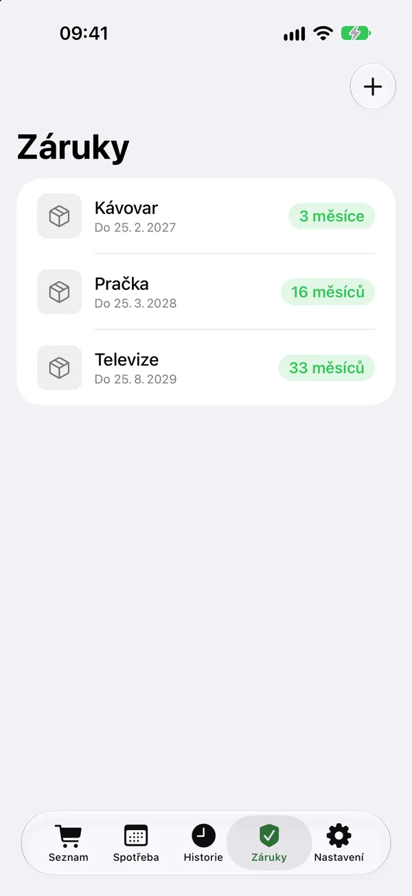
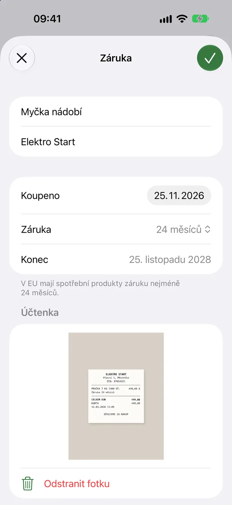

Jak uložit záruku i s fotkou účtenky
-
Krok 1 Zapněte kartu Záruky
Karta je ve výchozím stavu skrytá. Zapnete ji v Nastavení → Funkce → Záruky – dole přibude karta Záruky.

-
Krok 2 Přidejte záruku
V kartě Záruky klepněte na +. V okně Nová záruka vyplňte produkt, Obchod, datum Koupeno a délku Záruka (v EU nejméně 24 měsíců). Do Poznámky si můžete zapsat například sériové číslo.

-
Krok 3 Přiložte účtenku a uložte
V sekci Účtenka zvolte Vyfotit nebo Vybrat z galerie a uložte zelenou fajfkou ✓. Klepnutím na fotku ji později zobrazíte na celou obrazovku.

Časté otázky
Kdy mi přijde připomínka?
Přibližně měsíc (30 dní) před koncem záruky, v čase nastaveném v Nastavení → Oznámení → Čas. Připomínka funguje, když máte povolená oznámení a zapnuté Připomínky spotřeby.
Vidí moje záruky i rodina?
Ne. Záruky i jejich fotky jsou soukromé a se společnou domácností se nesdílí. Fotka zůstává jen ve vašem iPhonu a ve vašem soukromém iCloudu.
Další otázky najdete na stránce Podpora.